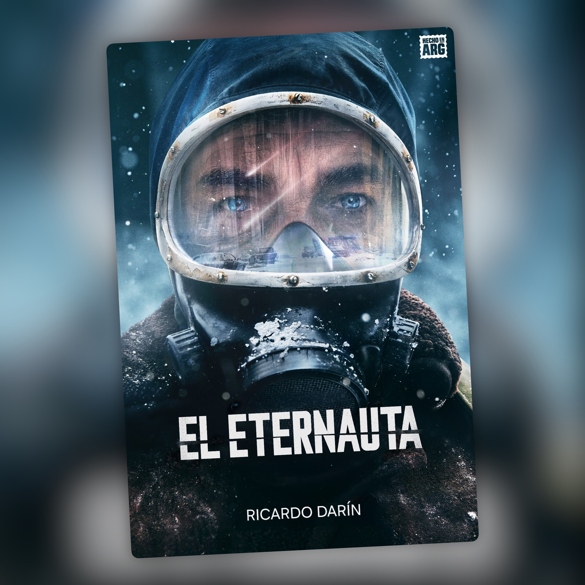

El Eternauta — Temporada 1
Termina, y lo único que tengo claro es que necesito ya la segunda temporada

El Eternauta viene de la historieta que Héctor Germán Oesterheld publicó en 1957, con Buenos Aires cayendo bajo una nevada que mata a quien la toca. Bruno Stagnaro la ha traído a Netflix casi setenta años después, y la serie no se apoya en la nostalgia del original para funcionar: funciona sola.
Juan Salvo (Ricardo Darín) está jugando al truco con sus amigos cuando empieza a nevar y todo se va al garete. A partir de ahí la serie no suelta. Es de esa ciencia ficción que además de entretener consigue que te preocupes de verdad por la gente que hay dentro de ella, y eso no es tan fácil de conseguir.
Lo primero que se nota son las actuaciones. Darín lleva el peso sin esfuerzo aparente, pero lo que más me ha sorprendido es que el resto del reparto está a su altura. Nadie suena impostado. Todos parecen gente real reaccionando a algo para lo que no hay manual de instrucciones.
Y eso es lo que más me ha atrapado, más incluso que la propia invasión: los personajes. Gente con miedo, con dudas, que se equivoca y a veces hace lo que no debería. Eso los hace mucho más fáciles de querer que un grupo de héroes que siempre sabe qué hacer.
Dentro de ese grupo hay uno que se queda con media serie para él solo: Favalli, el profesor de física que interpreta César Troncoso. Inteligente, tranquilo, con esa energía de profesor que sabe exactamente lo que está haciendo pero sin perder sensibilidad por el camino. Lo digo sin vergüenza: se ha convertido en uno de mis personajes favoritos de los últimos tiempos.
El último capítulo deja más preguntas que respuestas, y esta vez lo digo en el buen sentido. Cierra lo que tenía que cerrar de esta primera tanda y abre bastante más de lo que esperaba. Ahora mismo lo único que quiero es que llegue la segunda temporada.
Cuatro estrellas, y no me extrañaría subirla si la siguiente entrega mantiene el nivel.
Ficha técnica
- Creada por: Bruno Stagnaro, basada en la historieta homónima de Héctor Germán Oesterheld y Francisco Solano López (1957)
- Guion: Bruno Stagnaro y Ariel Staltari
- Reparto principal: Ricardo Darín, Carla Peterson, César Troncoso, Andrea Pietra, Marcelo Subiotto, Mora Fisz
- Temporadas: 1 (6 episodios, 2025)
- Plataforma: Netflix